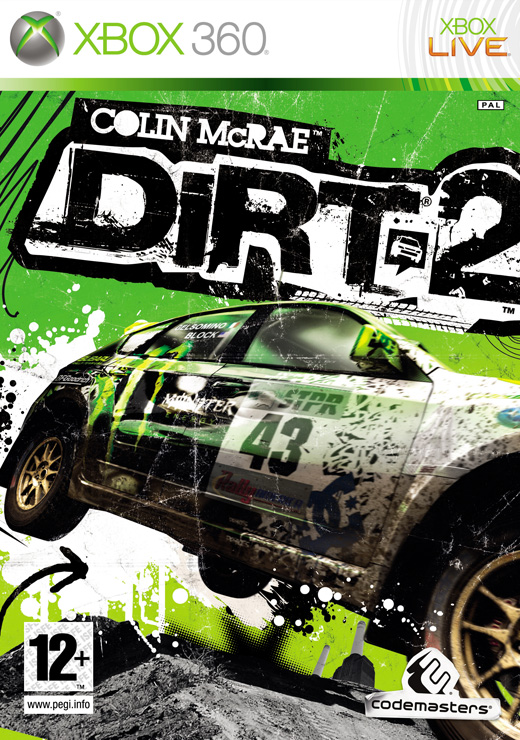
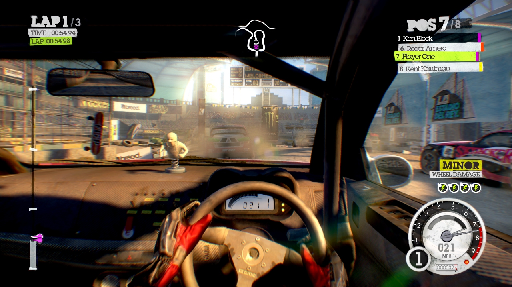
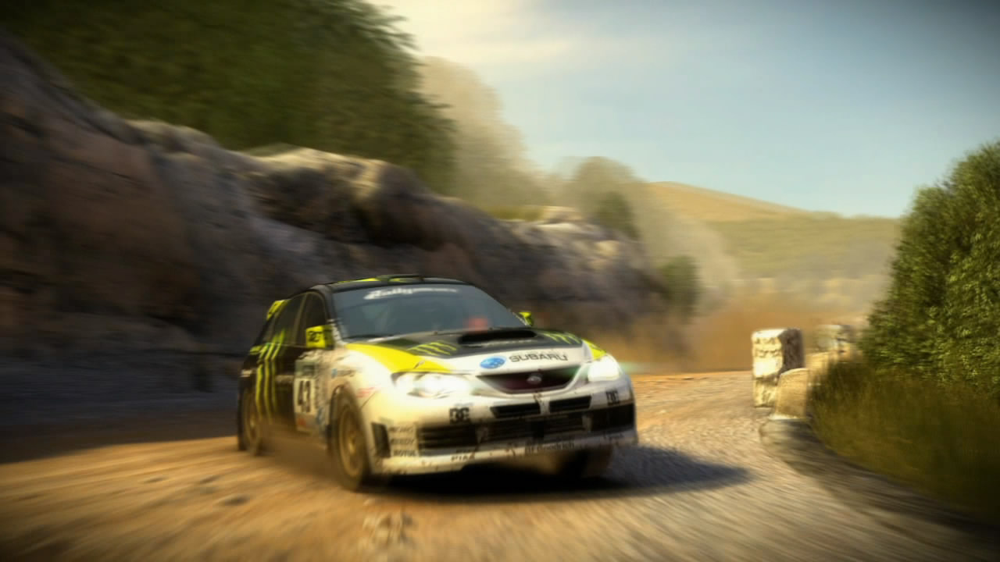
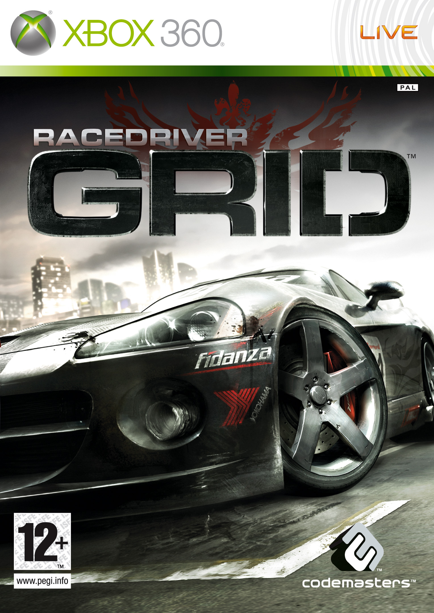
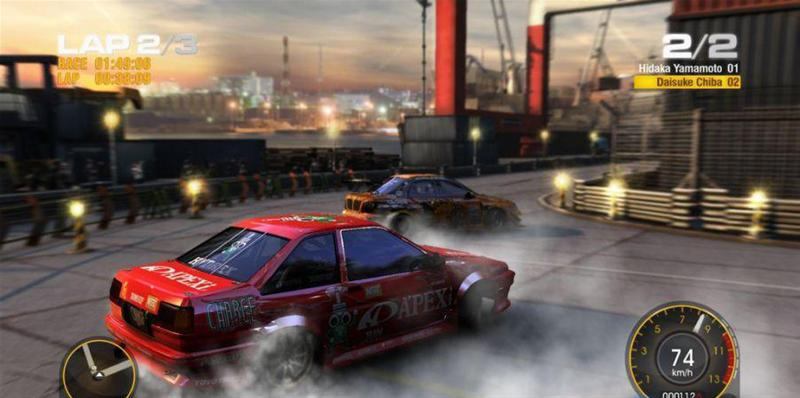
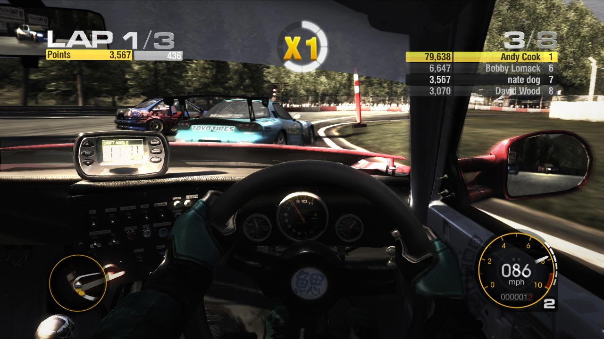

DiRT2 was developed with the goal of being "off-road racing with extreme sports attitude". It is, much like GRID, a game that falls somewhere between simulation and arcade racing. DiRT2 improves on GRID and DiRT with its polished presentation, a much improved handling model, varied game modes and extensive multiplayer options. The best part of DiRT2, in my opinion, is the handling, which works great on a pad and feels awesome with a wheel.
I worked on, amongst other things, the career progression, game modes, and developed a framework merging offline and online game play code.
|  |  |  |
GRID is a tarmac racer spanning multiple disciplines and types of vehicles. It's a racing game that tries to hit a middle spot between simulation and arcade racing, by providing accessible handling but with an authentic motor sports feel. It was the first Codemasters game to provide the flashback functionality, which allows players to rewind time to correct mistakes. My favourite aspect of GRID is the authentic racing professional feel it has to it. While I was interested in racing prior to GRID, working on the game has made me into a motor sports enthusiast.
I was mainly involved with the game play side of things, including ghost lap recording and playback, save systems, PC installer and Games For Windows integration and TCR compatibility.
|  |  |  |